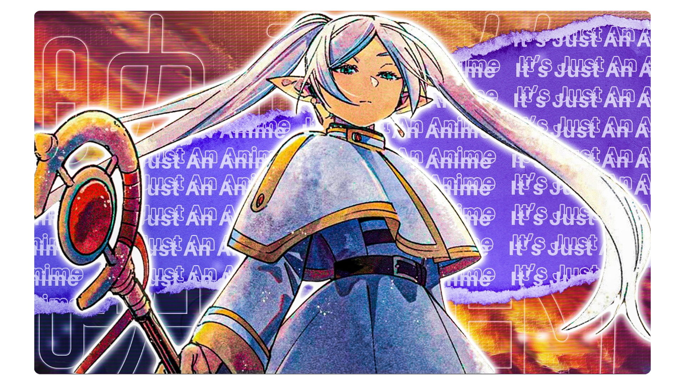

QuiteAFancyEm | Timeless
QuiteAFancyEm
Home
Projects
Blog
Socials
/ Thumbnails // Old Projects
These embarrasing projects were grade school things that I don't feel like featuring but still is something.
Examples include music production attempts and an old Minecraft mod that reached 18k downloads.
